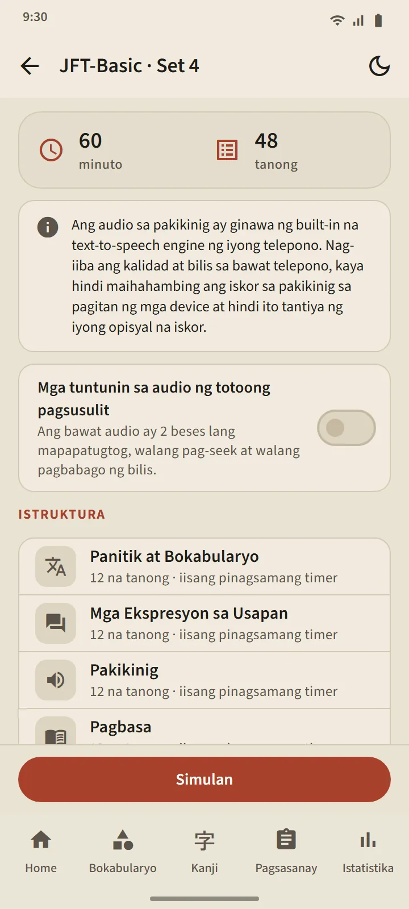
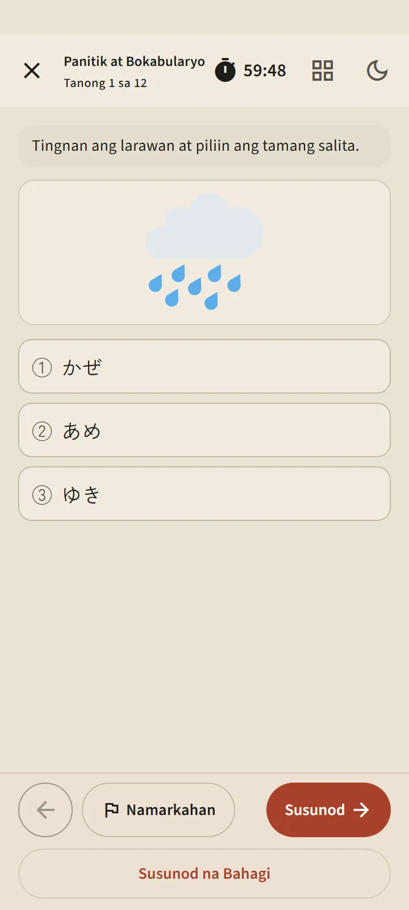
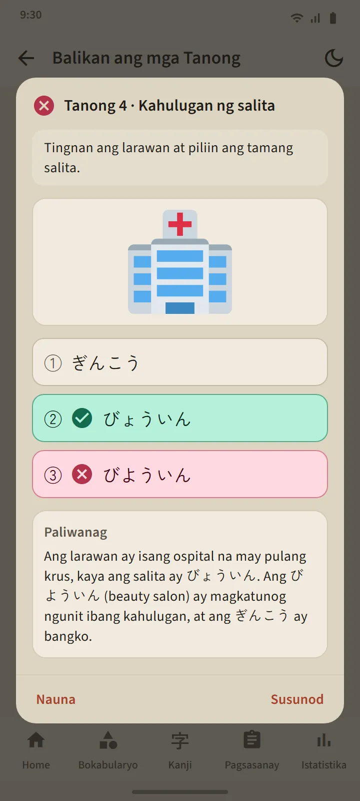

Anim na antas, 24 na set
Binubuksan ng bawat card ng antas sa tab na Pagsasanay ang pahina ng antas: isang button na Simulan, mga tile ng set na may numero, at kasaysayan. Kapag natapos na ang lahat ng set, bubukas ang Halo-halong pagsasanay, na inuuna ang mga tanong na hindi mo pa nakikita. Dumarating ang mga bagong set sa pamamagitan ng mga update ng app.
| Exam | Mga set | Mga tanong bawat set | Oras |
|---|---|---|---|
| JFT-Basic | 8 | 48 | 60 minuto |
| JLPT N5 | 8 | 68 | 90 minuto |
| JLPT N4 | 2 | 85 | 115 minuto |
| JLPT N3 | 2 | 102 | 140 minuto |
| JLPT N2 | 2 | 107 | 155 minuto |
| JLPT N1 | 2 | 101 | 165 minuto |


Sinusunod ng mga anyo ng tanong ang totoong exam
Tatlong pagpipilian ang gamit ng mga tanong sa JFT-Basic (apat sa balarila), may mga sitwasyon at prompt sa wika ng nag-aaral, at may larawan sa maraming tanong, tulad ng mga opisyal na sample na tanong. Apat na pagpipilian ang gamit ng mga tanong sa JLPT, furigana na angkop sa antas, at mga tekstong babasahin sa iba't ibang anyo: maikling kuwento, memo, paunawa, mensahe, email, at talahanayan ng impormasyon. Ino-audit ang bawat set bago ilabas, at walang kinopyang opisyal na tanong.
Bago ka magsimula, ipinapakita ng briefing screen ang istruktura ng set na iyon: mga seksyon, bilang ng tanong, at oras. Sinusunod ng oras ang totoong exam: iisang pinagsamang oras sa JFT-Basic, at oras bawat seksyon sa JLPT. Pagkatapos mong magpatuloy, nagsasara ang nakaraang seksyon, tulad mismo sa silid ng exam. Maaari mong markahan ang mga tanong na pinag-aalinlanganan, umalis nang pansamantala (tuloy ang takbo ng orasan), at magpatuloy mula sa tab na Pagsasanay.


Pakikinig gamit ang Japanese na boses ng phone mo
Binabasa ng Japanese text-to-speech engine ng phone mo ang mga script ng pakikinig, na may ibang boses para sa bawat nagsasalita. Naririnig lang ang mga pagpipiliang sagot at hindi nakalimbag, tulad sa totoong exam; mga pagpipiliang larawan ang gamit ng JFT-Basic at N5. Nililimitahan ng switch na "Mga tuntunin sa audio ng totoong pagsusulit" ang pag-play sa pinapayagan ng totoong exam: dalawang beses sa JFT-Basic, isang beses sa JLPT.
Dahil galing sa bawat phone ang boses, magkakaiba ang kalidad sa bawat device; kung wala pang Japanese voice ang isang phone, ipinapakita ng app kung paano mag-install nito at nilalaktawan ang bahagi ng pakikinig hanggang magkaroon nito.

Mga resulta sa opisyal na iskala, saka ipinapaliwanag ang bawat tanong
Iginuguhit ang mga resulta ng JFT-Basic sa linyang 10–250 na may mga marka sa 145, 175, at 200 at ang mga pangalan ng banda ng mga ito, A1, A2.1, at A2.2, pati kung para saan ginagamit ang bawat banda sa totoong exam. Ipinapakita ng mga resulta ng JLPT ang bawat seksyong may iskor laban sa minimum nito, dahil sa totoong exam, bagsak kapag may isang seksyong mas mababa sa minimum. Kasama ng dalawa ang porsiyento ng tamang sagot bawat seksyon at bawat uri ng tanong.
Binubuksan ng button na Balikan ang mga Tanong ang bawat tanong kasama ang sagot mo, ang tamang sagot, at isang paliwanag; ipinapakita rin ng mga tanong sa pakikinig ang kanilang script. Available sa 12 wika ang mga paliwanag. Pinapanatili ng kasaysayan ng bawat antas ang mga pinakahuli mong pagsasanay, at nasa tab na Istatistika ang tsart ng iskor.
Tantiya lang ang mga iskor na ito para masubaybayan ang progreso, hindi hula sa opisyal mong resulta.


Libre at Premium
Bukas ang bawat set sa libreng bersyon. Pagkatapos mong pindutin ang Simulan, naka-lock ang susunod na pagsasanay sa antas na iyon nang 7 araw; nananatiling bukas ang ibang antas, at hindi kailanman naka-lock ang kasaysayan at mga paliwanag. Habang naka-lock, maaari mong i-unlock ang isang karagdagang pagsasanay sa pamamagitan ng panonood ng ad. Walang pahinga ang Premium. Hindi kailanman lumalabas ang ads sa mga screen ng tanong, para sa sinuman.